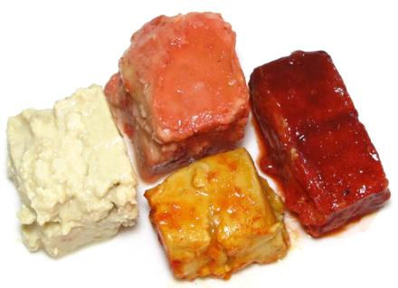

Fermented Tofu

[Preserved Tofu, Rotten Tofu, Fermented / Preserved Bean Curd; Doufu ni,
furu, doufuru (China); chao (Vietnam)]
This is sort of the tofu equivalent of aged soft cheese (think Roquefort
or blue cheese) and is used throughout China and Southeast Asia as an
ingredient and as a table condiment. Your average Asian market will have
a slew of brands and varieties. If you like pungent dairy cheese you'll
probably like this stuff too.
Blocks of tofu, usually about 1-1/2 inch in the longest dimension, are
fermented by a special process (traditionally under straw) and then
packed in liquid with flavoring ingredients.
More on Varieties of Tofu.
Fermented bean curd is used as a table condiment, particularly for
flavoring rice porridge at breakfast, and is often used as a flavoring
ingredient in many kinds of dishes, especially vegetarian. The photo
above shows four common varieties. They are all quite salty, and
differences in flavor are subtle, except, of course, the one with chili.
White:
(Left) - Taiwan - Soybean, Salt, Water, Ethyl
Alcohol, Calcium Sulfate, Sesame Oil.White w/Chili:
(Bottom) - Taiwan - Beancurd, Water,
Salt, Chili, Sesame Oil.Red:
(Top) - Taiwan - Soybean, Calcium Sulfate, Water,
Red Yeast Rice, Glutinous Rice, Salt, Wine.Red - Fake:
(Right) - China - Water, Soybean, Cooking
Wine, Salt, Sugar, FD&C Red #40 (E129), Spice.
Buying:
Any market serving an East or Southeast Asian
community should have several kinds and many brands on the shelf, packed
in small jars, usually 10-1/2 ounces. These sell for around 2016 US
$2.79 per jar.
Storing:
Once opened (or even before opening) this stuff
can get pretty ugly. Americans are no longer accustomed to just spooning
mold off the top of stuff and then eating it (and the Nervous Nellies at
the FDA will tell you you'd surely die) - so I recommend refrigerating
jars once opened. Try to keep the blocks under the liquid level.
Refrigerated it will keep for years.
bp_tofufz 130615 r 161202 - www.clovegarden.com
©Andrew Grygus - agryg@aaxnet.com - Photos
on this page not otherwise credited are ©
cg1 - Linking to and non-commercial use
of this page permitted